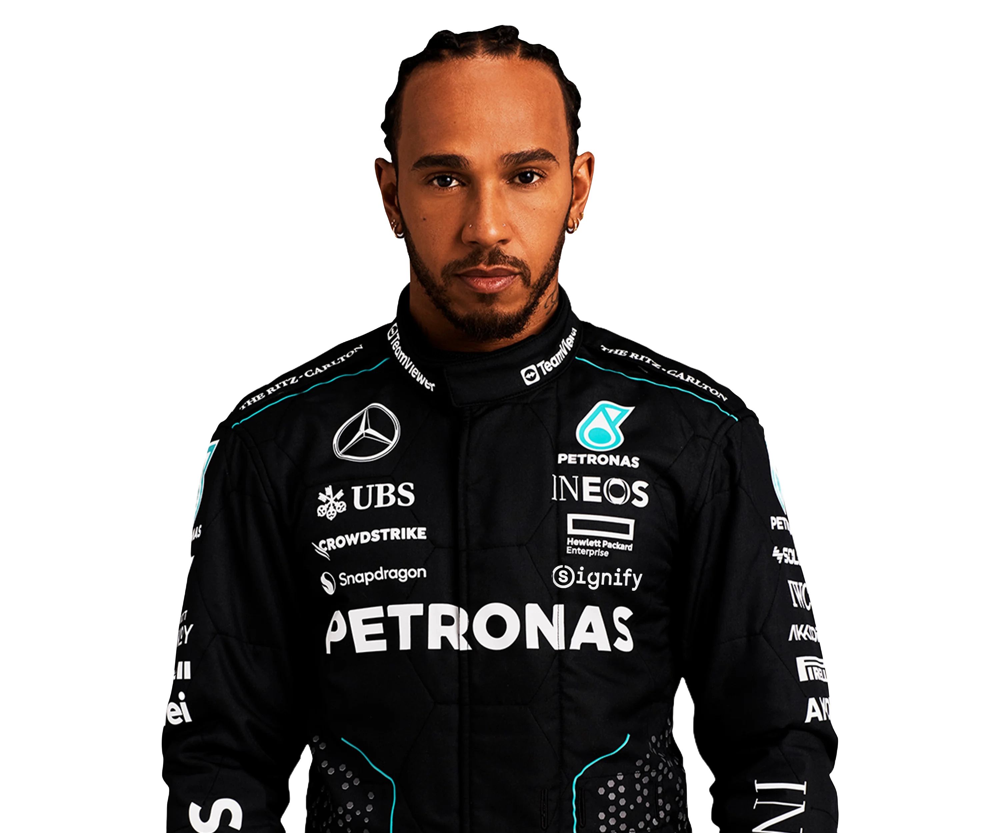
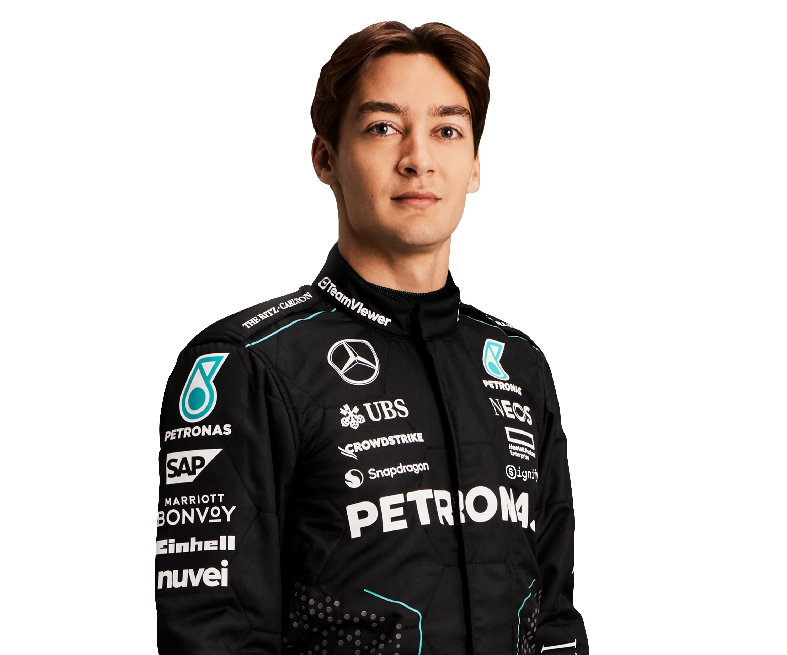

Lewis
HAMILTON
44
"A seven-time World Champion. The most wins, pole positions, and podium finishes in Formula One history. An environmentalist, social activist, fashion designer, musician, and a force for global change in combating racism and pushing for increased diversity in motorsport. There are many sides to Sir Lewis Hamilton. Few sportspeople have had the impact that he has had not only in his own sport but beyond, and at 39 he is still hungry to achieve and deliver more." - Mercedes-AMG F1
George
RUSSELL
63
"George has lived and breathed motorsport from his very earliest years. With an older brother who was a national karting champion in his own right, the racetrack has always been his natural home. Now as a Grand Prix victor, the 26-year-old is one of the most exciting talents in the sport." - Mercedes-AMG F1